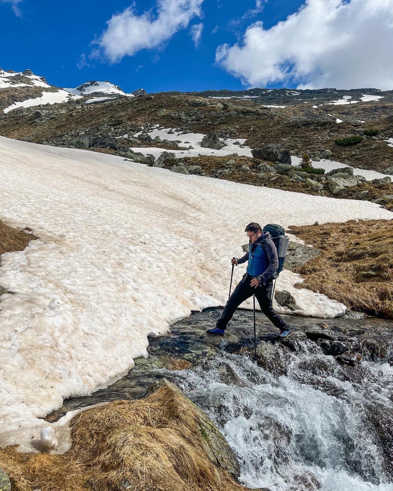

ABOUT US
Who is Anna and what is her story?
Anna was born and raised in Ukraine but moved to the Czech Republic to study when she was a teenager. Anna tested various professions. By education, she is an art teacher and an architect, but for the last eight years, she worked as a project manager in IT and R&D. Although she loves her job, it not leave her much time to dedicate to her art passions, but she is still very enthusiastic about them, see her website annatymoshenkoart.com! Anna is also a foodie and she likes to experience different cultures through the local cuisines, which are a big part of the adventure as well.
Anna is a strong independent woman who is hard to tame. (Jan is nodding, he has to.) After several trips with Jan on his motorbike across Europe, she felt the excitement and was no longer so happy with being a mere passenger. It was time that she gained her independence and took things into her own handlebars! Versys X300 is her first and very much adored motorbike, and although it is not the biggest one - it has the soul!
Who is Jan and how did he get into motorcycling?
Jan was born and raised in the Czech Republic but lived and worked in several different countries. He got into motorcycling by pure coincidence. At the age of 23, he was seeking adventure and went to explore Vietnam. Soon after he arrived in Hanoi, he realized that the available way to explore the country by bus only led him to destinations full of tourists and this was not the adventure he envisioned. Luckily, a fellow Czech with whom Jan got acquainted on the plane was around and taught him how to ride a motorbike. Couple of days later he purchased his first motorcycle, a legendary Honda Win, and even though he never sat on one before this trip he rode 3000 km solo from Hanoi to Saigon!
Two years later another motorcycling trip followed, this time to Central Asia. Soon after their arrival, together with his friend they bought two cheapest motorcycles and rode for one month 4000 km from Kazakhstan through Kyrgyzstan to Tajikistan to the borders with Afghanistan and back. For the following five years, Jan Jan did not ride any motorcycle but in 2020 he got back to his senses. Horrified by the maintenance issues caused by cheap bikes from his previous trips, he finally settled upon a more reliable bike – a BMW F800 GS. With this bike, Anna and Jan made several trips across Europe: into the Austrian Alps, Italian Dolomites, and twice to south Sweden. Jan is not only a big motorcycle enthusiast but he does several other things too and you can read about it here [link to my website].
How did they meet?
Anna and Jan met on a date through an online dating app in Brno, Czechia in the middle of the pandemic! The online world is full of weirdos and Jan was certainly one of them. At the time he was working in Sweden but was pretending to be a Swedish boy on a home officing trip in Czechia. Several hours later he realized that he liked Anna very much and had to reveal that he was a local from Brno. Anna was in shock because she was translating all Czech into English the whole time. In retrospect, Jan was very lucky that Anna liked him too and did not leave him immediately.